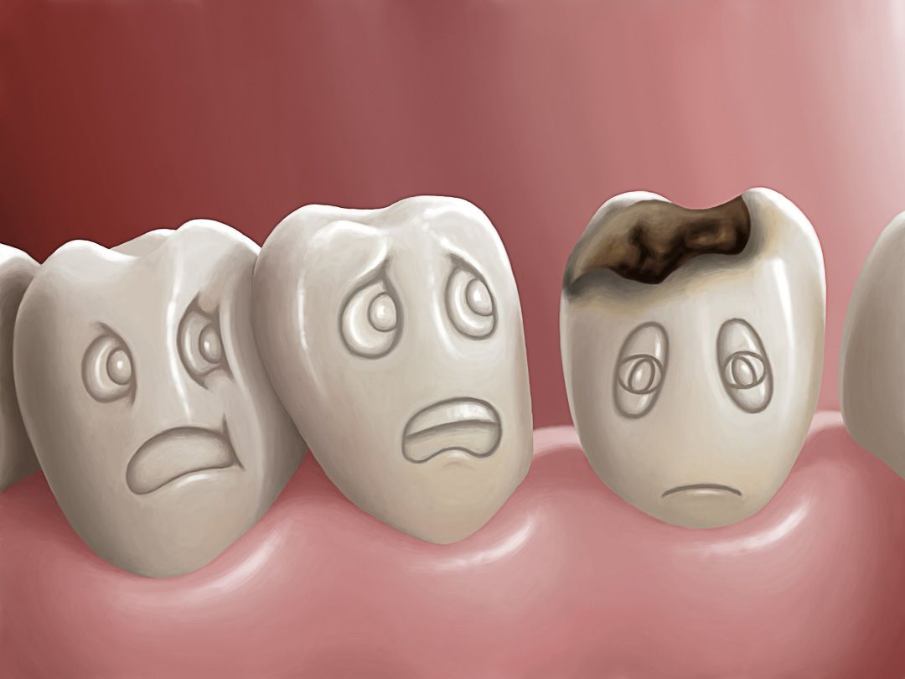

Las enfermedades bucales agudas son problemas que afectan la boca y aparecen en poco tiempo. Pueden provocar dolor, inflamación, molestias o dificultad para comer.
Muchas de estas enfermedades son causadas por microorganismos como bacterias y hongos.
La mala higiene bucal favorece la aparición de estas enfermedades.
Algunas enfermedades bucales agudas
* caries;
* gingivitis;
* candidiasis oral.
Cada una afecta distintas partes de la boca y necesita cuidados para prevenirse.
¿Cómo prevenirlas?
* cepillarse correctamente;
* usar hilo dental;
* mantener hábitos saludables;
* visitar al odontólogo;
* evitar el exceso de azúcar.
Información importante
Cuidar nuestra boca todos los días ayuda a prevenir enfermedades y mantener dientes y encías saludables.
